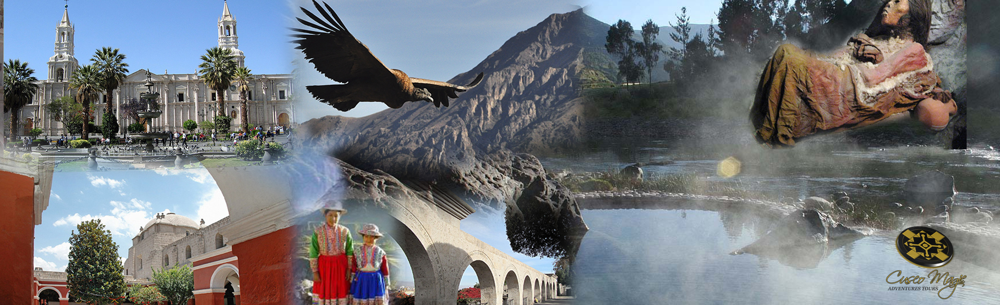

|  | |||||
| Tours Turismo | Nazca | ||||
La ciudad de Nazca debe su nombre a la cultura Nazca que habitó la región (200 a.C.-600) antes de que fuera conquistada por los Incas. La región es conocida principalmente por las famosas líneas de Nazca, increíblemente preservadas gracias a su clima seco durante todo el año y su suelo árido. Lo que sí se sabe, es que esta multitud de dibujos y formas geométricas fueron trazados por el pueblo Nazca entre 500 AC y el año 500 sobre unos 750km². Entre las figuras principales podemos observar un pájaro gigante de 305m de ancho, pero también un lagarto, un pelícano, un mono, un cóndor, un colibrí, unas manos, una flor, una araña, una figura humana que algunos llaman el astronauta. También hay muchas figuras menos conocidas como las ballenas, dos llamas, un perro, un pequeño pájaro, un árbol, una estrella y muchos otros. Por supuesto, ¡quedan muchas más por descubrir!
|
|||||